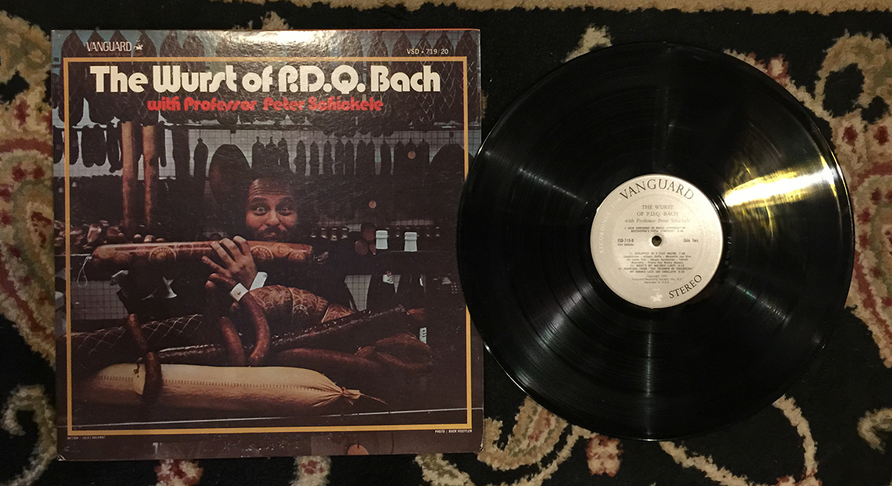
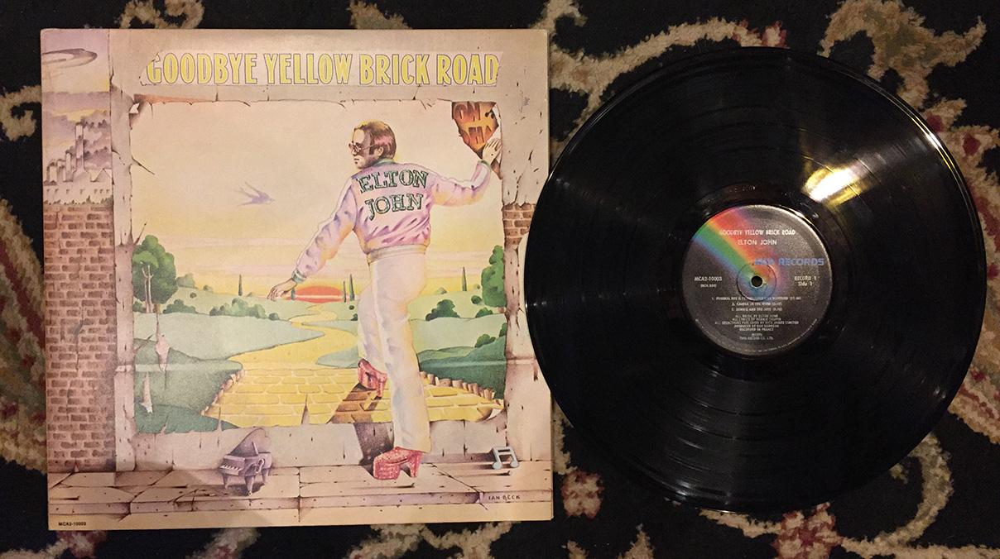
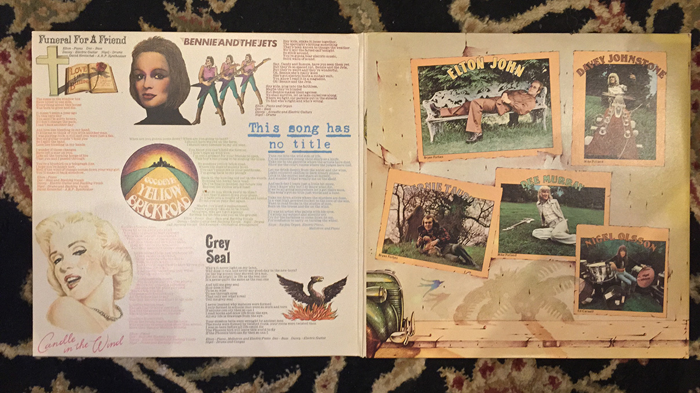

I can only hope that “The Wurst of P.D.Q. Bach with Professor Schickele” is the worst record that I encounter during this little project. I try not to judge a book (or an album) by its cover, but c’mon, take a look at the picture of the album cover and try to convince me that this was going to be good.
This is apparently a comedy album. Comedy was clearly different in 1971 when this record was produced. It’s heavy on bad pun based on funny sounding German words and played-out gags all based on what seem to be a bunch of inside jokes about classical music. When I was in band, every year there was the holiday concert and we would do stuff like wear Santa hats or reindeer antlers and play songs like 'Sleigh Ride' and when I made the whip sound with wood clapper thing, everyone would laugh because cheap gags are funny every onece and a whiles. This record is kind of like that, but longer and keeps repeating the same corny joke over and over again.
Some things just don’t hold up to the test of time. Things that were funny ten years ago, or two months ago, or even yesterday can feel painfully tired when you revisit them. The past isn’t always nostalgic. It seems like most of the time it’s embarrassing or painful or just better off forgotten. Sorry, Professor Schickele, but this record fits that last category.
Verdict: Peace out

I obtained a whole new appreciation for this record the first time I dropped a needle on it almost ten years ago. “Goodbye Yellow Brick Road” was one of those albums that my parents played all the time when I was little kid, so I dismissed it when I grew a little bit older. However, when the first beamy notes of the opening track of ‘Funeral for a Friend/Love Lies Bleeding’ came in over the scratchy vinyl hiss through my Sony MDR-V600 headphones (studio quality headphones which I had appropriated from my dad), I was transfixed. The song built and built and the crescendo seemed to peak when everything else dropped out and it was just Elton and the piano, but then the guitar came in and, holy shit, I said to myself, why did I always skip over this song when I was little to get to ‘Bennie and the Jets?’
Despite being made in 1973, “Goodbye Yellow Brick Road” is really a timeless record. A lot of the things Elton sings about are themes that are still prevalent in today’s pop music; lyrical anecdotes about navigating stardom combined with everyday people kind of stuff like unrequited love, coming of age, complicated relationships and sex. It reminds you that the things you have dealt with, or are dealing with, are issues that exsisted long before you were put on this earth. It puts things in perspective.
Musically, the whole record does a pretty good job of not getting itself stuck in the decade of its origin. It sounds older, but it’s by no means dated. On another note, the art and layout inside the record is something to behold. As I progress with this project, I’m beginning to appreciate the level of production involved with making the actual record sleeves themselves. The extensive original art and amount of copy written, even for the records that I’m getting rid of, is impressive and an interesting glimpse into a bygone era. It’s not something we really see as much in these days of buying songs off of iTunes.
Verdict: Keeping, if only to play this record when I’m old and have ‘Saturday Night’s Alright For Fighting’ remind me of my early twenties.
Staying:
-One – single by Metallica
-Goodbye Yellow Brick Road by Elton John
Going:
-The Wurst of P.D.Q. Bach by Professor Schikele
-South of the Border by Herb Albert’s Tijuana Brass
-My Wild Irish Rose by Dennis Day
-Pass In Review by Bob Sharples